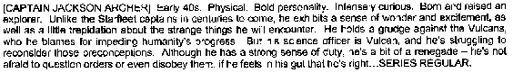

|
Jonathan Archer
|
Dati Personali
Nato a New York (North Star), Terra, nel
2111.
Rimane a San Francisco fino al 2151 (Broken Bow)
Genitori: Sally (In
A Mirror, Darkly - Part II) e
Henry Archer.
Gruppo sanguigno: B- (Carpenter Street).
Matricola: SA-022-9237-CY (In
A Mirror, Darkly - Part II).
Umano maschio, atletico, personalità coraggiosa e intensamente curiosa, nato
e cresciuto come un esploratore. A differenza di quelli che saranno i suoi
successori, Archer prova meraviglia ed eccitazione assieme ad un poco di
trepidazione riguardo alle stranezze con cui l'esplorazione spaziale lo mette in
contatto. Benché non abbia una grande stima per i
Vulcaniani, da lui giudicati i
colpevoli dell'arresto del progresso umano, ben presto potrebbe ricredersi in
quanto il suo ufficiale scientifico è proprio un
Vulcaniano. Malgrado il suo forte
senso del dovere, alcune volte si comporta quasi come un rinnegato e non ha
paura di contestare o anche disubbidire ad un ordine se reputa di essere dalla
parte della ragione. Archer ha seguito la costruzione dell'Enterprise
fin dai primi momenti.
Da ragazzo ha fatto parte degli Eagle Scout ed ha ricevuto 26
distintivi di merito (Rogue Planet).
Prima di entrare nella
Flotta Stellare, Archer aveva preso in considerazione
l'idea di imbarcarsi su una nave cargo (Horizon).
Sull'Enterprise Archer è accompagnato dal suo cane, Porthos. Archer è un
grande appassionato di pallanuoto (Vox Sola).
Sentimentalmente legato con Erika Hernandez, ha interrotto la relazione quando
questa si è arruolata nella
Flotta Stellare ed era una sua sottoposta. Dopo la
crisi degli Xindi, Archer ha
riallacciato i rapporti con la Hernandez, diventata nel frattempo Capitano della
Columbia (Home).
Viene ricordato dai posteri, come il più grande esploratore del XXII secolo (In
A Mirror, Darkly - Part II).
Assegnamenti
- In origine il nome del capitano era Jackson.
- Uno dei protagonisti di Dracula di Bram Stoker si chiama Jonathan Harker.
- La data di nascita è indicata nella novelization di
Broken Bow.
- Sotto è riportato lo stralcio del fax del casting che è stato divulgato su
Internet all'inizio di marzo 2001 relativo a Jonathan Archer.
